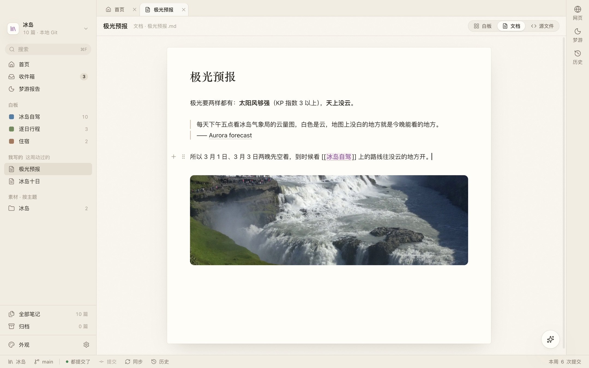
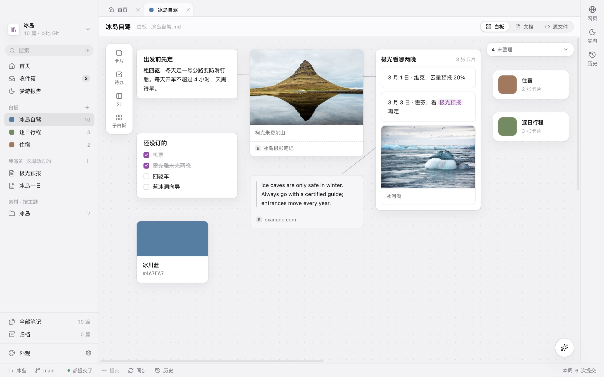
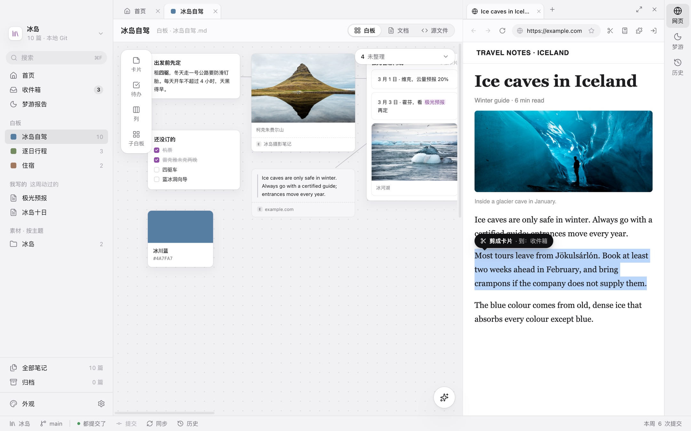
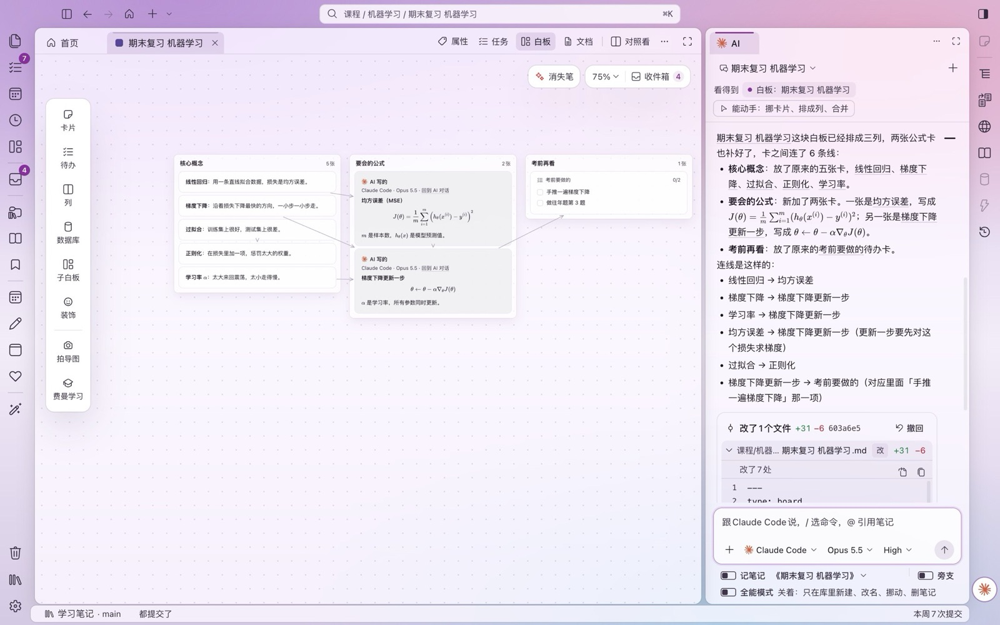
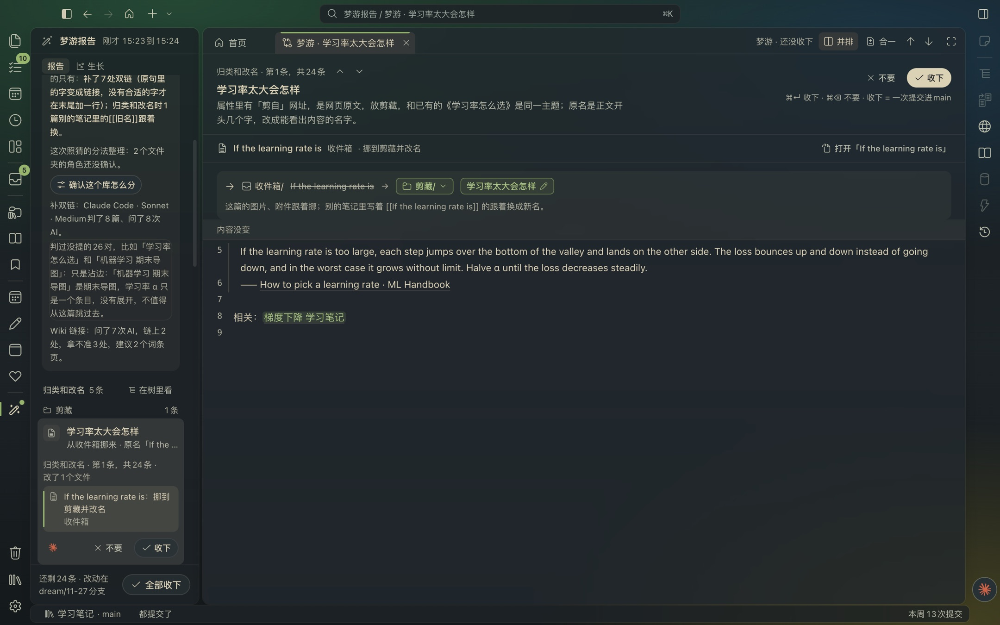
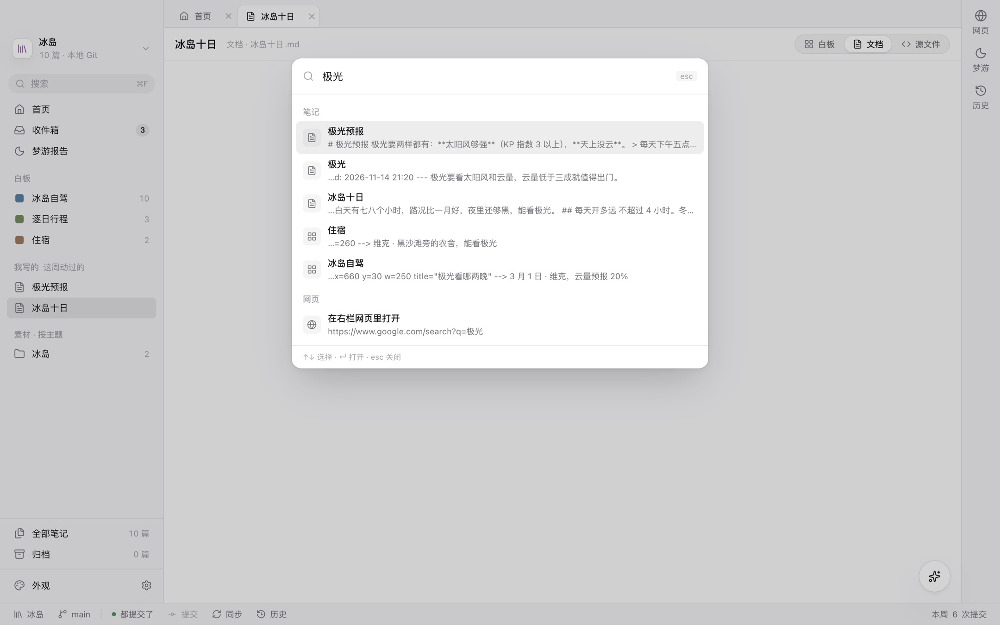
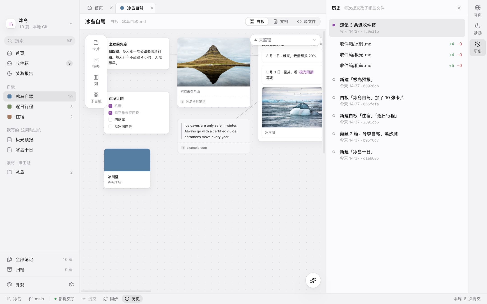
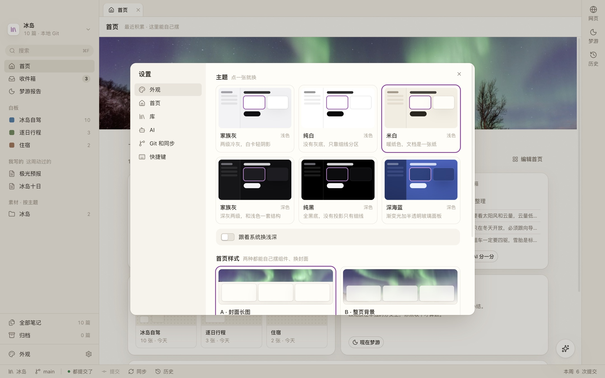
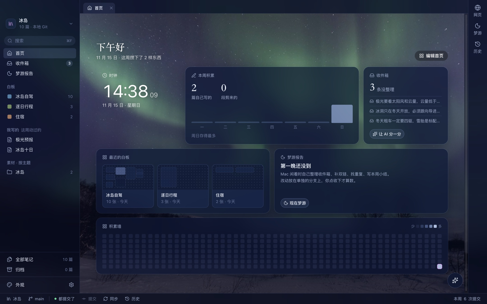

白板和文档，是同一个文件
一篇笔记点「白板」摊成卡片，点「文档」从上往下读。卡片、列、待办、图片、子白板、连线都写在 md 的注释里，换个软件打开照样是一篇读得通的文章。
- 双击空白处加卡片，拖进列、连线、⌘Z 撤销
- 文档实时预览，光标所在行露出 md 原文；[[双链]] 按名字找，笔记挪到哪都能点
- 打开再保存，文件一个字节都不变（有自动化测试守着）

白板和文档是同一个 Markdown 文件，旁边开着网页随手剪，AI 用你电脑上已有的命令行替你整理。笔记是你硬盘上的普通文件，每一次改动都在 Git 里，能撤回。

不用先想好分类。剪进来的先进收件箱，写的东西随时能在白板上摆开，AI 和「梦游」替你把散的收拢。
一篇笔记点「白板」摊成卡片，点「文档」从上往下读。卡片、列、待办、图片、子白板、连线都写在 md 的注释里，换个软件打开照样是一篇读得通的文章。

内置完整的 Chrome 内核。选中一段，白板里是「剪成卡片」，文档里是「剪进文档」插到光标处，来源和时间自动带上。整页剪藏把正文存成收件箱里新的一篇。

右下角的 AI 用这台 Mac 上已经登录的 Claude Code、Codex、Gemini 或 OpenCode，不另存密钥。直接说话，它能在白板上加卡片、排成列，在文档里插入、改写，在网页里打开、剪藏。

Mac 闲着的时候，AI 在单独的 Git 分支上给收件箱分类、补双链、找重复、写本周小结。第二天看「梦游报告」，一条条收下或丢掉。

搜标题也搜正文，刚打的字也算。命令也在这里：换主题、编辑首页、在右栏开网页、打开梦游报告、问 AI。

没提交的改动按设置的间隔自动提交，退出和换库前也会提交。历史里看每次改了哪些文件；配上自己的远程仓库，「同步」一下在几台电脑间来回。

家族灰（浅、深）、纯白、米白、纯黑、深海蓝，白天夜里可以各用一套。首页两种样式：封面长图加组件，或者整页背景加玻璃组件；组件能拖、能收、能换大小，封面能换。


没有账号，没有服务器，没有使用统计。软件只是打开你选的那个文件夹。
没有试用期，没有付费版，没有账号。
以前的版本和每一版改了什么在 GitHub 发布页。Windows 和手机版还没有。
这一版没有经过 Apple 公证（作者的其他软件也没有）。第一次打开时如果提示「无法验证开发者」，macOS 15 及以后到 系统设置 › 隐私与安全性 里点「仍要打开」（右键「打开」已经绕不过这个提示）；macOS 14 及更早，在访达里右键点 Canvas Notes 选「打开」。